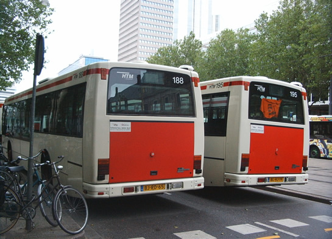

Deel oudste metrotracé wordt gesloopt en meer...
- vrijdag 12 december 2008 09:17
- Geschreven door Joachim
Deze week wordt het metrospoor tussen wisselcomplex Parallelweg en tramremise Hilledijk gesloopt. Het spoor werd al enige jaren niet meer gebruikt. De voornaamste reden hiervoor was dat metrostellen niet meer naar remise Hilledijk hoefden voor onderhoud aan wielen, doordat op remise 's-Gravenweg een gloednieuwe wielen/kuilenbank kwam.
Er wordt begonnen met het weghalen van de spoortrafo's, daarna wordt ook de rails weggehaald. Dit betreft de rails tot aan de welbekende 'Bananenbrug'. Vermoedelijk wordt ook deze enkelsporige brug richting remise Hilledijk gesloopt. De sporen die gesloopt zullen worden lagen er al sinds 1966, twee jaar voordat de Rotterdamse metro daadwerkelijk ging rijden. Een stukje metro-geschiedenis verdwijnt...

Om dit spoor gaat het... Het spoor richting ex-metroremise Hilledijk. Misschien worden de sporen/wissels hergebruikt... Dat kwam al eerder voor in de metrogeschiedenis. Het spoor van wisselcomplex Poortugaal werden destijds gebruikt voor wisselcomplex Nieuw Verlaat.
Stakingen
De protestactie op de Coolsingel in Rotterdam is in een grimmige sfeer verlopen. De beelden heeft iedereen natuurlijk gezien. Omdat ook RET-personeel meestaakte tussen 11.00 uur en 16.00 uur werd de dienstregeling anders uitgevoerd dan normaal. Tussen 11.00 uur en 12.00 uur werden diverse metrodiensten naar de remises gehaald en werd er ook opgesteld op de keersporen van station de Akkers.
Op zowel de Erasmuslijn als de Calandlijn werd een personeelstrein ingezet. Deze bracht actievoerende RET-medewerkers naar het centrum van Rotterdam. Rond 15.00 uur werd begonnen met het opstarten van de dienstregeling. Veel metrodiensten vielen uit, er waren vertragingen van maximaal 30 minuten. Tussen 17.00 uur en 18.00 uur reden de meeste metro's weer volgens dienstregeling.
Foto's met dank aan M-stuff.

Ook medewerkers van vervoersbedrijf HTM (Den Haag) waren van de partij...
Het was druk op de Coolsingel... meer dan 20.000 mensen kwamen op de demonstratie af. Het is nu nog afwachten hoe de grote landelijke actiedag op 2 oktober a.s. zal uitpakken.
De Tochten
Op station De Tochten is vannacht de sectie van perronspoor 2 gewijzigd. Dit d.m.v. een extra spoortrafo, die ongeveer in het midden van het perron geplaatst is. Binnenrijdend vanaf het wisselcomplex de Tochten worden de signaleringen Groen35(tot perron), 10 absoluut(perron), en nul absoluut(na einde perron) ontvangen. Het stootjuk wordt ook deze week nog geplaatst.
Het uitloopspoor achter spoor 2 is inmiddels verwijderd. Op spoor 1 is bij de markering E(inde) S(ectie) het spoor in tweeën gezaagd, een spoortrafo/ATB-pot is nog niet geplaatst. De werkzaamheden zullen de komende week in de nacht voortgezet worden. Gisteravond rukte om 0.15 uur een locomotief met werkwagen 7101 uit naar de Tochten. Nogal vroeg: de laatste dienstwagen moest station de Tochten nog bereiken.